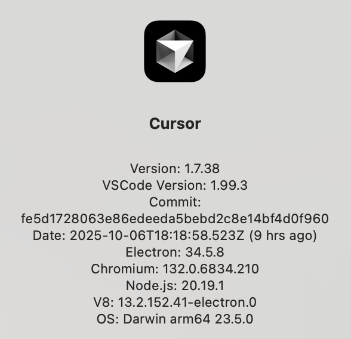
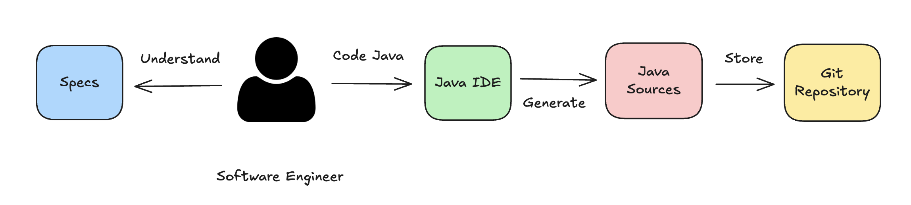
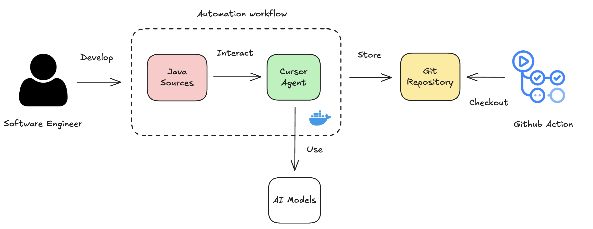

101 Cursor AI
Learning to use for Java Enterprise projects
v0.3.0-SNAPSHOT (60min talk)
Version control
- V3: W-JAX (2025/11/06)
- V2: Devoxx BE (2025/10/07)
- V1: Madrid JUG (2025/05/06)
 Source: Girl With a Pearl Earring (Glaze
technique) - Johannes Vermeer, 1665.
Source: Girl With a Pearl Earring (Glaze
technique) - Johannes Vermeer, 1665.
There is nothing permanent except change.
- Heraclitus
"If you can't describe what you are doing as a process, you don't know what you're doing."
- W. Edwards Deming
Who I am
|
|
Juan Antonio Breña Moral Software Engineering Manager @ Capital One, C1
Twitter | Github | LinkedIn |
Acknowledgements
- François Poirier
- Jose Ignacio Dominguez Montoya
 Source: Leavitt's Alignment Model (1965) >> People, Process and Technology Framework
Source: Leavitt's Alignment Model (1965) >> People, Process and Technology Framework

This talk couldn't age well over time.
(The market evolves rapidly)
Poll
Can you raise your hand ✋, if you use Intellij Idea Ultimate?
Poll
Can you raise your hand ✋, if you use VSCode?
Poll
Can you raise your hand ✋, if you use Eclipse?
Poll
Can you raise your hand ✋, if you have tried Cursor AI?
Poll
Can you raise your hand ✋, if you use Cursor AI/CLI in combination with another IDE?
Poll
Can you raise your hand ✋, if you have tried Claude Code?
Poll
Can you raise your hand ✋, if you have tried Github Copilot?
Agenda (60 min)
- Who I am
- Context
- SLDC
- Cursor platform
- Data privacy support
- Demos
- Takeaways
- Q&A
Agenda (60 min)
- Who I am
- Context (5min)
- SLDC (5 min)
- Cursor platform (10min)
- Data privacy support (5min)
- Demos (25min)
- Takeaways (10min)
- Q&A
Context
Context
Cursor version used for the talk:
Context
Why Cursor is changing the way of working?

ThoughtWorks Radar 2025Q1 // Tools
Source: https://www.thoughtworks.com/radar/tools/summary/cursorSLDC
SLDC (Software Lifecycle Development Cycle)

Source: https://commons.wikimedia.org/wiki/File:SDLC_-_Software_Development_Life_Cycle.jpg
SLDC
| Planning/Design | Coding/Testing | Operations |
|---|---|---|
|
|
|
How Cursor can help in each stage of the SLDC?
SLDC
| Design | Coding / Testing | Operations |
|---|---|---|
Cursor Features: ✅
|
Cursor Features: ✅
|
Cursor Features: ✅
|
Source: https://cursor.com/docs
SLDC
Design > Coding / Testing > Operations
Let`s put focus in the Coding/Testing stage where Cursor can help in the most cases.
üîç
Cursor platform
Cursor little by little is increasing the opportunities to use in Organizations with features for:
- For Software Engineers
- For DevOps pipelines
Cursor platform
For Software Engineers:
- Cursor AI Desktop + Tab model + Mode Plan
- Intellij Idea Ultimate + Cursor Agent CLI
- VSCode + Cursor Agent CLI
- Github Codespaces + Cursor Agent CLI
- Cursor Web
- Cursor BugBot
- Cursor Rules
- Cursor Composer 1
Cursor platform
For DevOps pipelines:
- Cursor Cloud Agents API
- Cursor Rules
- Cursor Composer 1
- Cursor BugBot
Cursor platform
For Software Engineers
Cursor platform
For Software Engineers: AS IS
Cursor platform
For Software Engineers: TO BE
Source: Cursor AICursor platform
For Software Engineers: TO BE
Type in the terminal:
cursor-agent

Source: Cursor CLI
Cursor platform
For Software Engineers: TO BE
Type in the terminal:
curl https://cursor.com/install -fsS | bash
cursor-agent \
-p "analyze the latest threaddump and the flamegraph \
to provide some insights to fix this memory leak" \
--print
Source: https://cursor.com/cli
Cursor platform
For Software Engineers: TO BE
It is common to use Wider screen to handle your favourite Java IDE + Cursor Agent CLI.

Cursor platform
For Software Engineers: TO BE
You can submit tasks from your Smartphone using Cursor Web associated to one Github repository.
Source: https://cursor.com/agents
Cursor platform
For Software Engineers
Cursor Composer 1, is the new agent model designed for software engineering intelligence and speed.
Source: https://cursor.com/blog/composerCursor platform
For DevOps pipelines
Cursor platform
For DevOps pipelines: AS IS
Cursor platform
For DevOps pipelines: TO BE
 Source: Cursor Cloud Agents APIData privacy support
- Security features
- Privacy mode
- Trust
Privacy mode
Note: with a Pro account, the developer needs to disable. But with a Business account, this feature is handle at the organization level.
Source: https://www.cursor.com/privacyPrivacy mode

Trust
Cursor operates a continuously monitored and 3rd-party audited security program.
SOC 2 is a compliance framework used to evaluate and validate an organizations
information security practices.
Trust
Subprocessors are third-party services that Cursor uses to provide its services.

|

|
Demos
- DevOps pipelines features
- Cursor Cloud Agents API
- Software Engineer features
- Cursor AI Desktop
- Tab model
- Modes (Ask, Agent & Plan)
- Cursor rules
- Cursor AI Desktop
Demos
DevOps pipelines features
Cursor Cloud Agents API
With Cursor Cloud Agents API, you can delegate tasks in the cloud, not in your local machine in order to automate some tasks in your repository and submit a PR at the end of the process.
Source: https://cursor.com/docs/background-agent/api/endpointsCursor Cloud Agents API
Cursor Cloud Agents API, provides a RESTful API organized in 3 areas: Agent Management, Agent Information & General Endpoints.

Cursor Cloud Agents API
 Source: https://cursor.com/agents
Source: https://cursor.com/agents
Cursor Cloud Agents API
Demo:
In the Maven module `sandbox`
in the package info.jab.examples
Develop a classic Java class HelloWorld.java program
that print "Hello World" in the console only
and not create any test class for this example
verify the changes with `./mvnw clean compile -pl sandbox`
Source: https://cursor.com/agents
Cursor Cloud Agents API

Cursor Cloud Agents API
Let`s automate the workflow execution a bit...
 Source: https://commons.wikimedia.org/wiki/File:Industriemuseum_Chemnitz_-_moderne_Karosserieschwei%C3%9Fanlage_mit_Industrierobotern.jpg
Source: https://commons.wikimedia.org/wiki/File:Industriemuseum_Chemnitz_-_moderne_Karosserieschwei%C3%9Fanlage_mit_Industrierobotern.jpg
Cursor Cloud Agents API
 Source: https://github.com/jabrena/churrera
Source: https://github.com/jabrena/churrera
Cursor Cloud Agents API
PML Workflow examples:


Source: https://github.com/jabrena/pml
Cursor Cloud Agents API
PML examples:

Source: https://github.com/jabrena/pml
Cursor Cloud Agents API
sdk install jbang
jbang cache clear
jbang catalog list jabrena
jbang churrera@jabrena
Cursor Cloud Agents API
Demos
Software Engineer features
Tab model
Tab completion in Cursor is powered by advanced AI models that understand your code context. As you type, you'll receive intelligent suggestions that:
- Complete your current line of code
- Suggest entire function implementations
- Help with common patterns and boilerplate
- Adapt to your coding style over time
Source: https://www.cursor.com/blog/tab-update
Tab model
Demo:
Implement the interface Cache in the class CacheImpl.java
public interface Cache {
void put(String key, Object value);
Optional< Object> get(String key);
}
Modes

Natural language interface for exploring, editing, and managing code with contextual AI assistance in Chat mode.
Source: https://cursor.com/docs/agent/modesAsk Mode
- Ask questions about specific code sections
- Get explanations of complex functions
- Find code patterns and examples
- Discover and understand your codebase
Ask Mode
| 2000's | 2010's | 2024+ |
|---|---|---|
| Books | Google, StackOverflow, Blogs, etc... | ChatGPT, Claude, Gemini... |
 |
Agent Mode
- Make codebase-wide changes and refactoring
- Implement new features from requirements
- Debug complex issues across multiple files
- Generate tests and documentation
- Maintain consistency across your entire project
Agent Mode
Example to fix a test:

Plan Mode
When you need to implement a new feature with a higher level of complexity, you can use the Plan Mode to break down the task into smaller steps.

Source: https://cursor.com/docs/agent/modes#plan
Cursor rules
Using rules in Cursor you can control the behavior of the underlying model. You can think of it as instructions and/or a system prompt for LLMs.
Source: https://docs.cursor.com/context/rulesCursor rules
AS IS:
User Prompt (Request) > Result from Model (Response)
TO BE:
User Prompt (Request) + System prompts > Result from Model (Response) <- Better results
Cursor rules
Where I can find specific cursor rules for Java? Example:
How to apply them in my repository? $(pwd).cursor/rules
sdk install jbang
jbang cache clear
jbang catalog list jabrena
jbang setup@jabrena init \
--cursor https://github.com/jabrena/cursor-rules-java
Takeaways
- Practice with Tab Model, Ask Mode, Agent Mode & Plan Mode in this order to get familiar with the Cursor features.
- Educate the team to use 'Auto' model for tasks with average complexity to save budget. It is the same mindset when you share the Azure/AWS/GCP cost dashboards.
- Model Composer 1, is a Game changer in the Cursor ecosystem.
Takeaways
- AI Features as the new evolution in the SDLC.
It is another element Shifting left.
Jenkins > Sonar > Dependabot > AI Agents... - Explore Cursor Cloud Agents API to evolve traditional pipelines with AI features for repetitive tasks.
- Explore Cursor Rules to develop your Corporate guidelines for Java. One starting point could be https://github.com/jabrena/cursor-rules-java.
Takeaways
- A key aspect to be considered to adopt Cursor AI/others is the Dev Quality culture of the company.
- Using this kind of solutions in an unattended way could increase Technical Debt.
- Models solve problems in many cases in a Suboptimal way & it doesn`t understand your team coding standards.
Takeaways
- Consider to review the code generated by models to mitigate issues related to Cyclomatic Complexity, OOP Design issues like (Extra constructors, Package design, Simplicity), Test overlapping, ...
- AI Agents doesn't develop libraries, use them to develop features.
- AI Agents doesn't have creative thinking, use them to develop features.
Slides

jbang trust list
jbang cache clear
jbang catalog list jabrena
jbang qr-code@jabrena \
--url https://jabrena.github.io/101-cursor/
üôè üôè üôè
Thanks